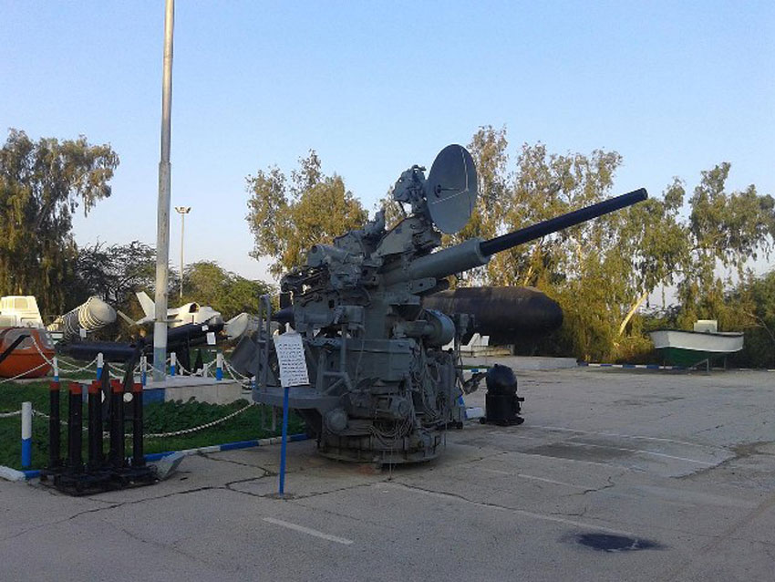

چه اهل موزهگردی باشید و چه علاقهمند به دریانوردی و بوشهر گردی، موزهی دریانوردی بوشهر میتواند برایتان جالب باشد. میدانید که بوشهر یکی از قطبهای کشتیسازی ایران است و موزهی دریانوردی بوشهر که از جاهای دیدنی بوشهر است، پر است از اشیای قدیمی و عتیقهی دریانوردان و سیاحان قدیمی. ابزار و ادوات دریانوردی از قدیمیترین قطبنماها تا جدیدترین تکنولوژیهای روز دنیا در صنعت کشتیسازی و دریانوردی را در این موزه میتوانید ببینید.
